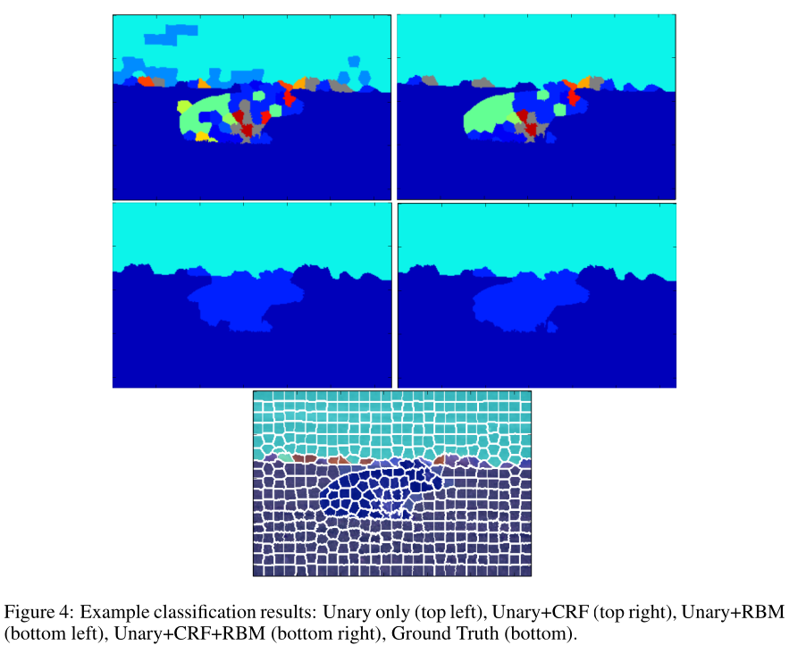
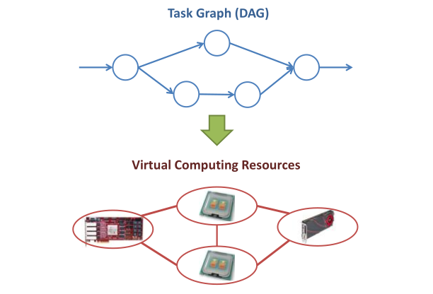
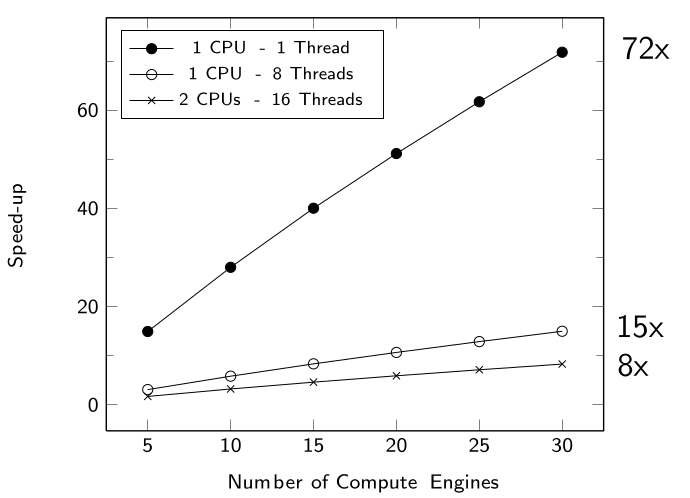
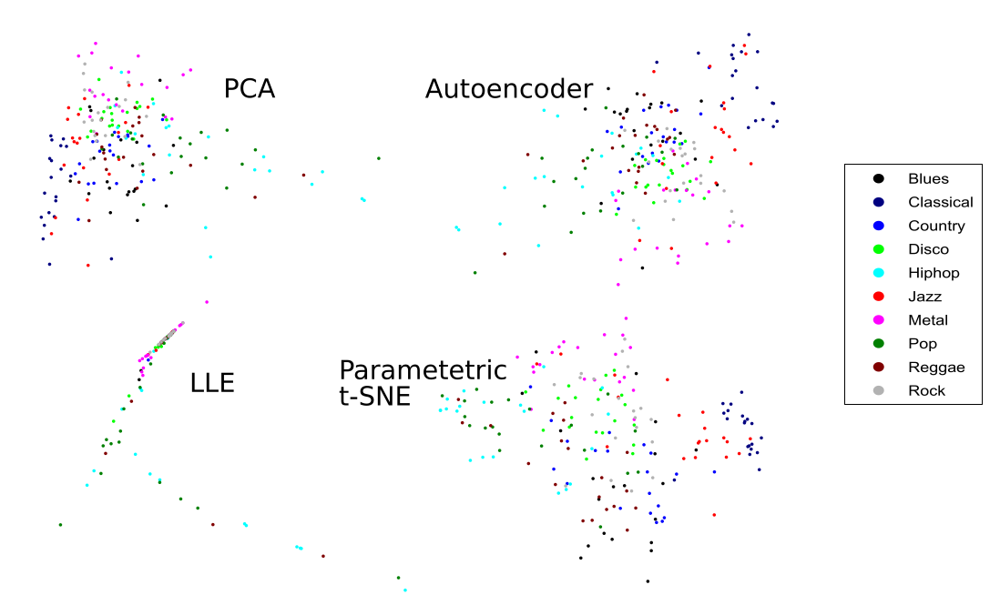

Charles LoPhD Candidate at the University of Toronto Computer Engineering e-mail: charles at charleslo dot net ResearchI am interested in hardware design, reconfigurable computing and machine learning. In the past I have designed high-performance and multi-FPGA accelerators for Object Detectors and neural networks. I was also involved with the early development of the Xilinx SDAccel tools for integrating FPGA accelerators in the OpenCL heterogeneous computing framework. Most recently, I have been applying Gaussian processes in Bayesian optimization techniques to perform design-space exploration of High-Level Synthesis and other hardware generators. Other ProjectsFlexible Gaussian process Library GitHub
“Image Labelling using Feature Learning and Boltzmann Machine-Augmented CRFs,” ECE1510 Project Report, 2014
|
|  |
Evaluated the combination of Neural Networks, Conditional Random Fields (CRFs) and Restricted Boltzmann Machines for image labelling.
Image segmentation was performed to obtain superpixels which were inferred using a neural network.
A CRF was then used to smooth labelling across adjacent superpixels while a global RBM provided location-based labelling.
Results showed the benefit of combining the techniques, but superpixel-based classification held back performance.
|  |
Proposed a method of mapping streaming task graphs on to virtualized heterogeneous resources in a cloud environment.
Compute kernel management and routing inspired by Software Defined Networking to simplify global control.
Preliminary prototype designed with x86 virtual machines, virtualized FPGA kernels and OpenFlow.
|  |
Training an ensemble of decision trees is highly task parallel but not well suited for GPUs
Developed a PCIe-FPGA system targeting a Xilinx Virtex-6 device to accelerator this task using a systolic array architecture
Performance of the floorplanned array scaled linearly and outperformed the multi-threaded OpenCV implementation
|  |
Experimented with PCA, Autoencoders, LLE and t-SNE as methods for compressing high-dimensional audio features for music genre classification.
Compression would allow for short feature tags to group together similar types of music in large databases.
Results found the t-SNE performed the best in maintaining neighbourhood structure.